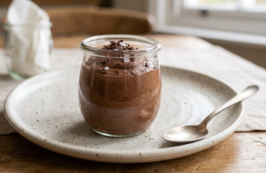

Mousse au chocolat

Recipe's description
The tiramisu citron is a variant of the classic tiramisu but with citron (lemon). The recipe fits more for the summer season since it is also the citron's season.
The difference in the steps is just a citron cream that we will add between the layers of biscuits and a more colorful and maybe sweeter at the top
Ingredients
- 200 g dark chocolate (minimum 60%)
- 6 eggs
- 1 pinch of salt
Steps
- Melt the chocolate in a double boiler or over very low heat, then let it cool until lukewarm
- Separate the egg whites from the yolks
- Stir the egg yolks into the melted chocolate one by one, mixing vigorously
- Beat the egg whites with the pinch of salt until very stiff peaks form
- Whisk in one-third of the egg whites to loosen the chocolate mixture, then gently fold in the remaining whites using a spatula, lifting the mixture to incorporate.
- Divide into ramekins or glass jars and refrigerate for at least 3 hours
Navigate